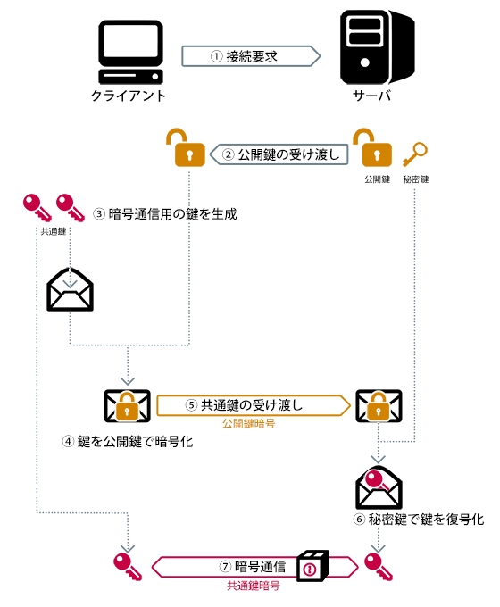
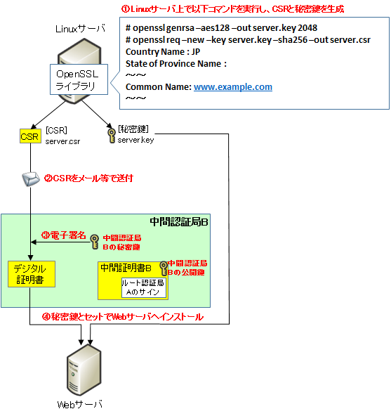

SSL Key Certificate
SSL authentication mechanism

CSR to Certificate

openssl commands
references
https://cspssl.jp/guide/mechanism.php
https://milestone-of-se.nesuke.com/sv-advanced/digicert/digital-certification-summary/
https://blog.freedom-man.com/openssl-command/